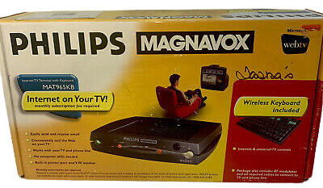
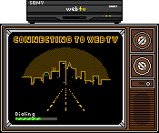

What is WebTV?
WebTV (eventually MsnTV) was a product/service which allowed people to use the internet without a computer. You could purchase the 'kit' at a brick-and-mortar store for around $100, which was a huge difference from the price of PCs back then (which usually retailed between $2-4k).

The kit came with three things: a WebTV modem/box, a wireless keyboard, and a remote. Installing it was easy; just unpack everything and hook it up to your TV. Then, you had to activate your service with WebTV itself (basically an ISP), which was around $25/month in 1998.
Installing it was easy; just unpack everything and hook it up to your TV. Then, you had to activate your service with WebTV itself (basically an ISP), which was around $25/month in 1998.There's a lot to say about WebTV, like how terrible it was navigating a website with a remote control, or how ineffective the wireless keyboard was at picking up keystrokes. Browsing the web on a WebTV was a completely different experience than using a PC.

This isn't just about WebTV, but my own experience using it when I was younger. Few things flood me with as much nostalgia as listening to some of the background music midis I used to hear when I was hanging out in TalkCity chatrooms and building my own websites. I hope you enjoy your stay browsing my page!